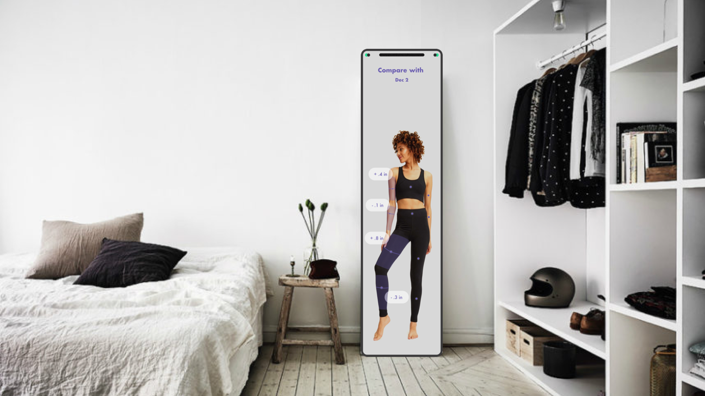

MILESONE4
System Concept
Our systems mainly consists of two parts:
-
Smart mirror: mirror itself is mainly used to help users measure the body shape, display the temporal data of the user and simple schedule. The interactions combined hand gesture with voice command which will be talked about later in each of the features.
-
Mobile Application: the application connected to the mirror stored the data gathered from the mirror and mainly used for users to retrieve their historical body data and compare their change of body data.
The features of System:
-
Body measurement process: The mirror will use voice and also visual indicator to suggest users to move to the required position and adjust their body gesture to let us better record his or her body shape data. After measurement, it will show users the current body data information as the overlay on the mirror at the position of the body part of your reflection.
-
Schedule measurement: Users will use hand gesture to schedule the frequency of the measurement which will result in the notification in our mobile application.
-
Historical Data Compare: Users can check their body data whenever they want on the mobile application and also compare the data along the timeline.
-
Application Notification: Users will receive notification reminding them to measure the body through the mobile application.
High-level architecture

Goals
The aspects of experience of the system we try to replicate with the demo
-
Onboarding
- Position prompt process: Scan; Voice command
- Schedule Measurement: Voice command
-
Routine Compare
- Position prompt process: Scan; Voice command
- Cellphone Usage
Demo Setup
Demo Script
Onboarding
(WHO) Jane is a 22-year-old university student who strives to live a healthy life by changing their body shapes. The challenges she has is lack of motivation in maintaining motivated and being aware of if they are on the right track. She decided to purchase our product. (WHEN) This is the first day after she bought the smart mirror. (WHERE) She stood in front of the mirror in her bedroom to create her body data profile.
Routine Compare
It has been a month since Jane brought the smart mirror. Through this month, she already used the smart mirror weekly. (WHEN) This is the day she went back home from the gym. (WHERE) She stood in front of the mirror in her bedroom to scan her body. With the help of mirror’s analysis and instructions, she was able to compare her current body data with the past ones and know her progress.
Demo Material


Voice Wizard of OZ

Prototyping Process
The prototyping process mainly consists of the following steps:
First, we discussed and developed a detailed script describing the main user scenarios of our product and the steps.
Second, we collaboratively designed the lo-fi wireframes on Figma based on the defined user scenarios, and then visualize them into hi-fi version.
Figma collaborative prototyping

Then, we set up the mirror and the projector, trying to ensure that the projected figures can be clearly shown on the mirror.
Setting Up Environment
Demo Evaluation
-
The demo demonstrates the majority of the features we want in our product. It went through the two main use scenarios - onboarding and routine compare. During the scenarios, we show details of how technologies such as voice interaction, body recognition work in an ideal way.
-
However, due to the technical limitations in both software and hardware, we could only use Wizard-of-wiz to mock the overall flow. Therefore, the accuracy and efficiency of body recognition data may be biased.
Feedback & Insights
Any feedback or insights that came out of preparing the demo.
- While deciding on how to implement the demo of our mirror, we first consider about using Adafruit devices. we found prototyping with actual digital screen difficult. We explore more ways to prototyping and finally decided on using a projector to simulate the overlay UI components of mirror.
- Scripts is really important to keep everything clear and organized. We set two scenarios first and then, according to different scenarios explore further details of different interactions of our product in the specific scene.
- Wizard of OZ is really helpful when we cannot implement voice recognation or other techinical-difficult interaction.